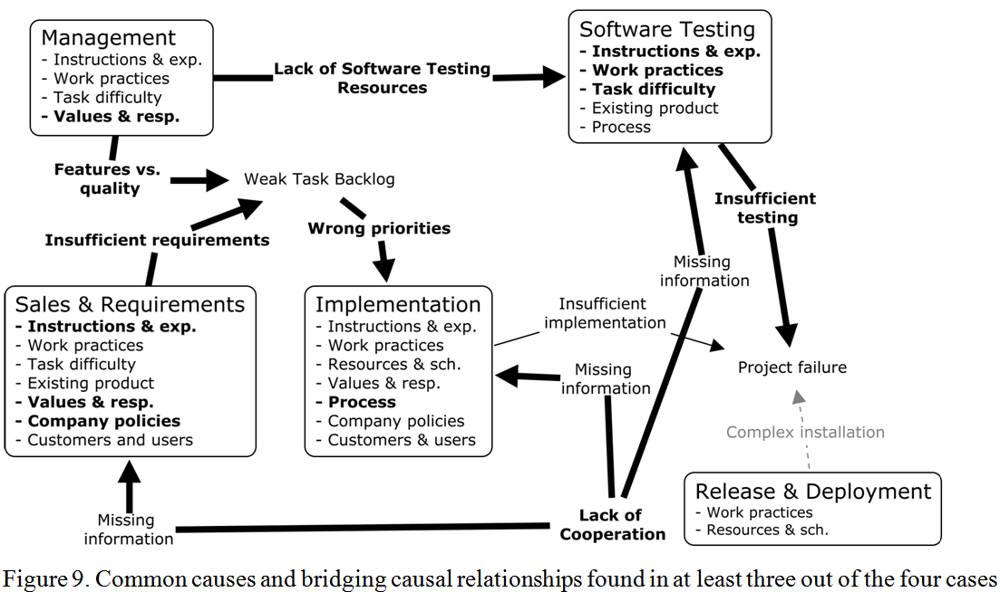

Abstract
Context: Software project failures are common. Even though the reasons for failures have been widely studied, the analysis of their causal relationships is lacking. This creates an illusion that the causes of project failures are unrelated.
Objective: The aim of this study is to conduct in-depth analysis of software project failures in four software product companies in order to understand the causes of failures and their relationships. For each failure, we want to understand which causes, so called bridge causes, interconnect different process areas, and which causes were perceived as the most promising targets for process improvement.
Method: The causes of failures were detected by conducting root cause analysis. For each cause, we classified its type, process area, and interconnectedness to other causes. We quantitatively analyzed which type, process area, and interconnectedness categories (bridge, local) were common among the causes selected as the most feasible targets for process improvement activities. Finally, we qualitatively analyzed the bridge causes in order to find common denominators for the causal relationships interconnecting the process areas.
Results: For each failure, our method identified causal relationships diagrams including 130 to 185 causes each. All four cases were unique, albeit some similarities occurred. On average, 50% of the causes were bridge causes. Lack of cooperation, weak task backlog, and lack of software testing resources were common bridge causes. Bridge causes, and causes related to tasks, people, and methods were common among the causes perceived as the most feasible targets for process improvement. The causes related to the project environment were frequent, but seldom perceived as feasible targets for process improvement.
Conclusion: Prevention of a software project failure requires a case-specific analysis and controlling causes outside the process area where the failure surfaces. This calls for collaboration between the individuals and managers responsible for different process areas.

Ref
Lehtinen, T. O. A., Mäntylä, M. V., Vanhanen J., Lassenius, C., Itkonen J. "Perceived Causes of Software Project Failures - An Analysis of their Relationships", Information and Software Technology, accepted Jan 2014
{kind=link}